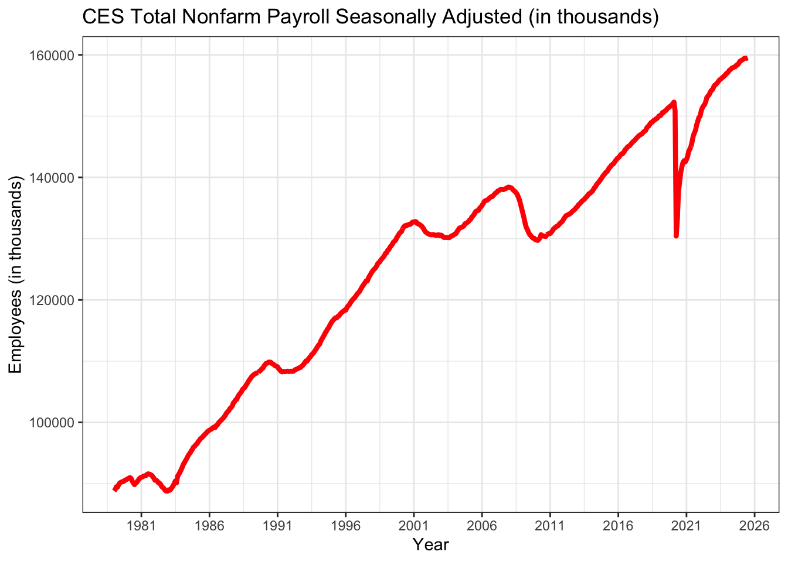
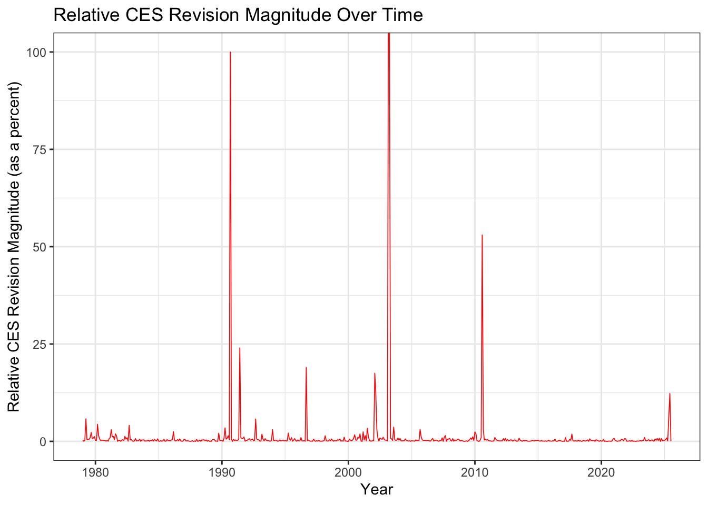
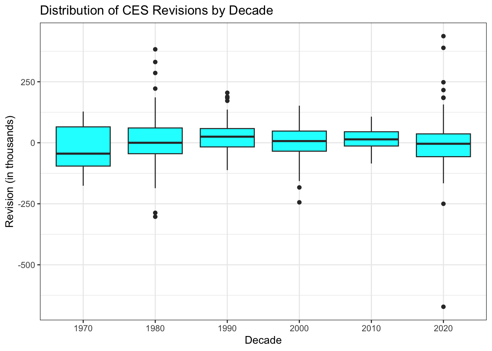

2025 has been comedic for USA’s political scene, primarily for proving why one’s claim is correct with insufficient evidence. Why the BLS (Bureau of Labor Statistics) numbers were not used is a question still with no answer as they are USA’s division for showcasing national statistics in a trustworthy manner.
Politics aside, the goal of this project is to examine recent patterns of the BLS CES (Current Employment Statistics) estimates and revisions. Calculations will be done via computationally-intensive statistical inference, explained more in section Statistical Inference. Having these calculated statistics from a trustworthy source, the last section will be a fact check of two politicians or commentators who spoke about CES revisions and the the firing of Dr. McEntarfer. Please know that no political bias was used in the selection of individuals and no political debate should spark from these results.
💽Data Acquisition
Data was collected from two separate data sources from the BLS:
CES Total Nonfarm Payroll Seasonally Adjusted: shows an estimate on how many people are employed, outside farming, in the USA.
CES Total Nonfarm Employment Revisions: shows how predictions for the estimate of employment changed over time
Instead of having a hard hyperlink to download the data as a file, code was used to automatically make that file. This was done by making requests to a URL with what data we wanted, scraping necessary elements from the table, and making adjustments to save the data as a CSV file. Data was downloaded appropriately, avoiding the chance of being blocked from accessing a site due to too many requests. Using this tactic also reduces the amount of POST requests needed from that site to then make a download.
Another advantage of this approach is reducing the need to manually obtain data, easily edit what data is desired, and simple sharability with others on how to obtain desired data.
Loading Libraries
#Have all necessary libraries in one code chunk. Will be used throughout the projectlibrary(httr2)library(rvest)library(dplyr)library(tidyverse)library(stringr)library(DT)library(purrr)library(lubridate)library(ggplot2)library(infer)
Downloading the Employment History Data
#Check if the directory and file already exist##Variables for directory and filedir_path <-'./data/mp04'file_path <-file.path(dir_path,'ces_employment_history.csv')##Check if directory exists. Create it if it does not exist.if(!dir.exists(dir_path)){dir.create(dir_path, showWarnings=FALSE, recursive=TRUE)}##Check if file exists. Load its data if it does, otherwise perform web scrapingif(file.exists(file_path)){ ces_em_data <-read.csv(file_path)} else {#Begin web scrapingmessage("Connecting to BLS...")##Step 1: Request data from BLS using httr2 req <-request('https://data.bls.gov/pdq/SurveyOutputServlet') |>req_method("POST") |>req_body_form("series_id"="CES0000000001","from_year"=1979,"to_year"=2025,"survey"="CE" ) |>req_perform()##Step 2: Parse main table into a variable with rvest html_result <-resp_body_html(req)###Extract table of interest main_table <- html_result |>html_element("table#table0") |>html_table()##Step 3: Modify table into proper formatmessage('Formatting table...') ces_em_data <- main_table |>#Select years with no NA and no columns with stringsfilter(!is.na('Year'), !str_detect(Year, 'Preliminary')) |>#Transform wide table into longer type with appropriate formatting. Displays months as its own columnpivot_longer(cols =-Year,names_to ="month",values_to ="level_str") |>##Step 4: Formatting table columnsmutate(date_str =str_c(Year, " ", month)) |>mutate(date =suppressWarnings(ym(date_str))) |>mutate(level =as.numeric(str_replace_all(level_str, ",", ""))) |>drop_na(date, level) |>select(date, level) |>arrange(date)##Step 5: Save raw datatable as a CSVwrite_csv(ces_em_data, file_path)message("CES Employment Data saved at", file_path)}
Final CES Estimates
Displaying the Datatable
#Create interactive datatable from the data downloaded.ces_em_data |>#Format data to be more presentablemutate(Date =format(as.Date(date, format="%Y-%m-%d"), "%Y-%m"),Employees =format(level, big.mark =",")) |>select(Date, Employees) |>datatable(style ="bootstrap5",rownames =FALSE,caption ="CES Total Nonfarm Payroll Employment (Seasonally Adjusted, in thousands)")
A Quick Look
Looking at the data table shows an overall increase in growth over the years of people who are employed. There were months where employment decreased, but the increases managed to be stronger, surpassing downfalls and reaching new highs each time. On the contrary, there may have not been a true increase of total employment as the population of the USA increased since 1979; there is no 1:1 ratio that expresses this statement as of now.
CES Revisions
The next dataset showcases how CES estimates have changed from one month to another. The end dataset will be customized as scraping the data from the link is complex and can be approached in numerous ways. Note this dataset will not include year 2025 as this year was not complete at the time of creating this project.
Downloading the Revisions History Data
#Check if the directory and file already exist##Variables for directory and filedir_path <-'./data/mp04'file_path <-file.path(dir_path,'ces_revisions_history.csv')##Check if directory exists. Create it if it does not exist.if(!dir.exists(dir_path)){dir.create(dir_path, showWarnings=FALSE, recursive=TRUE)}##Check if file exists. Load its data if it does, otherwise perform web scrapingif(file.exists(file_path)){ ces_revision_data <-read.csv(file_path)} else {##Step 1: Create function to extract necessary columns for each year. Takes in arguments of the year and html page. extract_columns_revisions <-function(year, html_page) {#Each table is distinguished by an id CSS. table_id <-paste0("#", year)#Extract the table only from the HTML. table_data <- html_page |>html_element(table_id) |>html_element("tbody") |>html_table(header =FALSE)#Take the first 12 rows, the months. Columns needed are Month, 1st estimate, and 3rd estimate. These are columns 1, 3, and 5. table_data |>slice(1:12) |>select(month =1, original =3, final =5) |>mutate(#Create date from the year and monthDate =ym(paste(year, month)),#Clean and convert to numeric value remaining columnsOriginal =as.numeric(gsub(",", "", original)),Final =as.numeric(gsub(",", "", final)),# calculate revisionRevision = final - original ) |>select(Date, Original, Final, Revision) |>#Remove rows with NA values guaranteed to appear for the most recent yeardrop_na() }##Step 2: Request data from Revisions using httr2. Start at the base of BLS URLmessage("Connecting to Revisions...") resp <-request("https://www.bls.gov") |>#Path of domain must be specified alongside User-Agent to avoid error 403req_url_path("web", "empsit", "cesnaicsrev.htm") |>req_headers(`User-Agent`="Mozilla/5.0 (Macintosh; Intel Mac OS X 10.15; rv:143.0) Gecko/20100101 Firefox/143.0") |>req_error(is_error = \(resp) FALSE) |>req_perform()#Check statusresp_check_status(resp) html_result <-resp_body_html(resp)##Step 3: Scrape the relevant HTML contents from the tables.#Scrape tables from years 1979 to 2025.message("Collecting tables...") ces_revision_data <-map(1979:2025,~extract_columns_revisions(.x, html_result)) |>#Combine all elements into one data structurelist_rbind()##Step 4: Save results locallywrite_csv(ces_revision_data, file_path)message("CSV file created successfully!") }
Displaying the Datatable
#Create interactive datatable from the data downloaded.ces_revision_data |>#Format data to be more presentablemutate(Date =format(as.Date(Date, format="%Y-%m-%d"), "%Y-%m")) |>select(Date, Original, Final, Revision) |>datatable(style ="bootstrap5",rownames =FALSE,caption ="CES Non-Farm Payroll Employment (Seasonally Adjusted, in thousands)")
Quick Look
Going through the Revision column shows the change from prediction to what actually happened in terms of employment. In general, the Revision column was hovering around -100 to 100, indicating good accuracy. Also, months that exceeded this range appear to have a relationship with an economic crisis in the USA, such as years 2021 and 2008-09.
📊Data Exploration and Visualization
Before starting data exploration, it is best to join the two separate data files into one main datafile (this is shown as a variable for this project). This appears to be an easy process after we cleaned the data as columns have the same name and quantity of rows is also the same. Statistics and Visualizations were made using the joined datatable shown in the sub-sections.
Joining the Data Tables
ces_all_data <-left_join(ces_em_data, ces_revision_data, join_by('date'=='Date')) |>#Organizing table names to be easier to understand and look 'professional' throughoutreframe(Date = date, Employees = level, Original, Final, Revision)
Notice!
For convenience, data displayed to you is rounded to 4 decimal places. However, this does not mean it is 100% accurate; there may be answers where more decimal places are needed and will state this when doing so.
Statistic 1: Fraction of Positive CES Revisions by Decade
Here, we are computing in each decade the fraction of positive revisions. A negative column is included for convenience.
Show the code
#Create data table with positive & negative averages with months for each decade.ces_all_data |>#Create decade columngroup_by((decade =floor(year(Date) /10) *10)) |>#Split average positive and negative revisions into two separate columnssummarise(n_months =n(),frac_pos =round(mean(Revision >0) *100,4),frac_neg =round(mean(Revision <0) *100,4) ) |>#Format column names and create the datatable.datatable(colnames =c('Decade', 'Total Months', 'Positive Average (%)', 'Negative Average (%)'), style ="bootstrap5")
Analysis
The first aspect to address is that each decade does not always have 120 months. The BLS started collecting CES data in 1979 and as of writing this, only 67 months were recorded for decade 2020. Regardless, we see decade 1990 had the highest positive average CES Revisions of about 69.1667%, indicating a large chunk of revisions were positive.
On the contrary, year 1979 had the worst negative average of about 0.5833% likely due to a much smaller sample size. Excluding this outlier shows that for most decades, the negative average was slightly under 0.5, indicating positive predictions for employment growth over time.
Statistic 2: Average CES Revision Overall Trend
Now that we have a sense of how revisions were per decade, let’s see the average overall trend of revisions.
Show the code
#Average revision overallces_all_data |>summarise("Mean Revision (in thousands)"=round(mean(Revision),4))
Mean Revision (in thousands)
1 11.4758
Finding
The overall trend in job growth was about 11,500, indicating monthly changes in employment have generally been predicted to move upwards by a modest amount. This can also be seen as relatively accurate when the most recent data reported about 160 million people employed.
Statistic 3: Average CES Revision Before and After 1993
Comparing revisions with year 1993 specifically is due to how well it had positive averages based on its decade and is a starting point where data appears to calm down in visualizations. In addition, it represents whether macroeconomic factors had any impact on guessing employment accurately.
Show the code
#Create new column to be interpreted alone. Splits data starting in 1993-01ces_all_data |>mutate(Interval =if_else(year(Date) <1993, "Pre-1993", "Post-1993")) |>#Find average based on the intervalgroup_by(Interval) |>summarise("Mean Revision"=round(mean(Revision),4))
The average revision was about 8565 people employed before 1993 and 12,726 jobs after 1993 (inclusive). The results indicate that there is less accuracy when the BLS attempts to predict the employment count as time went on. This is odd as it contradicts previously stated claims from analysis. However, this could be due to the data being skewed for the earlier years as the split is not 50:50 or the methodology for revisions shows the modern market is not how it is supposed be. Specifically, there should not be any major spikes in revisions to increase the result.
Statistic 4: Year with Largest Absolute Average Revision
Finding large revision numbers typically indicate the market is volatile and thus potentially in a recession. Obtaining the years that meet this criteria can provide reasons why there was such volatility.
Additional years will be provided to compare the highest mean revision year with years that came in 2nd, 3rd, etc.
Show the code
#Show 5 years with the highest average revisionsces_all_data |>#Add Year columnmutate(Year =year(Date)) |>group_by(Year) |>#Create mean absolute revisions column and extract the top 5 valuessummarise(avg_abs_rev =mean(abs(Revision))) |>slice_max(avg_abs_rev, n =5) |>reframe(Year, "Average Absolute Revision (in thousands)"= avg_abs_rev)
# A tibble: 5 × 2
Year `Average Absolute Revision (in thousands)`
<dbl> <dbl>
1 2021 180.
2 2020 130.
3 1980 106.
4 1981 104.
5 1982 96.3
Finding
Year 2021 had the highest average revision with about 180,500 new people employed per month. This confirms that revisions are likely to have a relationship with recession years as all years shown on the chart are considered to be part of a recession category. Using this mindset, it appears that year 2026 may start to see unexpected layoffs as a revision this high has not been seen since the early 1980s, which had nearly half as many revisions.
Statistic 5: Largest Final Revisions Recorded
Looking at the largest final revisions gives an overall picture of how extreme the BLS had to be during times of high volatility.
Show the code
#Obtain largest spikes with the corresponding dateces_all_data |>#Arrange descending order to extract highest and lowest final revisionarrange(desc(Final)) |>slice(c(1, n())) |>reframe(Date, Final)
Date Final
1 2020-06-01 4781
2 2020-04-01 -20787
Finding
The lowest final revision was -20787 thousand employed and the highest was 4781 thousand employed. What’s odd about this is both numbers are less than 2 months apart from each other during the start of the 2020 recession. This is likely due to how the economy managed to rebound rather quickly during that time, making these numbers not the most useful. They can still be used for analysis but in very niche scenarios.
Statistic 6: Revision and Month Relationship
The relationship between revisions and months would showcase that there are factors within a month, such as holidays or weather, that impact changes in the labor market.
Show the code
#Create table of months with mean and median columns for revisions.ces_all_data |>group_by(month =month(Date, label=TRUE, abbr=TRUE)) |>#Create mean and median columnssummarize(mean_abs_revision =mean(abs(Revision)),median_abs_revision =median(abs(Revision))) |>#Sort by month 1 (Jan), 2 (Feb), etc.arrange(month) |>reframe(Month = month, "Mean Absolute Revision"= mean_abs_revision, "Median Avsolution Revision"= median_abs_revision)
# A tibble: 12 × 3
Month `Mean Absolute Revision` `Median Avsolution Revision`
<ord> <dbl> <dbl>
1 Jan 48.2 34
2 Feb 43.7 39
3 Mar 65.6 46
4 Apr 68.9 47
5 May 55.5 42
6 Jun 53.5 35
7 Jul 52.3 43
8 Aug 53.8 49.5
9 Sep 80.2 57
10 Oct 50.7 35
11 Nov 55.1 37
12 Dec 54.3 36
Finding
Throughout the years, there seems to exist a complex relationship between revisions and months. Specifically, September has the largest revision in both categories, indicating it is a month where there is high volatility in employment. March and April also stand out with an average revision of about 65 and 69 respectively as these values are substantially higher compared to the rest except September. A guess could be this is a hiring period, though more statistics would have to be calculated to verify this.
Visualization 1: Employment Level Over Time
When we extracted the CES Total Nonfarm Payroll Seasonally Adjusted data, there were clearly too many rows to get a sense of how employment looked over time. Visualizing that data will make finding patterns and relationships much easier.
CES Employment Chart Code
ggplot(ces_all_data, aes(as.Date(Date), Employees)) +geom_line(linewidth=1.5, color ='red') +scale_x_date(date_breaks ="5 years", date_labels ="%Y") +labs(title ='CES Total Nonfarm Payroll Seasonally Adjusted (in thousands)',x ='Year',y ='Employees (in thousands)') +theme_bw()

Analysis
It is evident that starting with year 1985, total jobs has managed to increase in a nonlinear fashion. As stated with the data table, there appears to be a relationship with employment and recession fears as employment decreased by a large margin for quite some time. This is evident in years 2008-2009 and 2020, both periods where the economy was not doing well.
On the contrary, employment still managed to increase in 2024-2025 despite many claims of a recession being in place in those years. The shape of the most recent data is starting to form a hill though, potentially indicating a clear recession in 2026.
Visualization 2: Relative CES Revision Magnitude Over Time
Lets now visualize how well CES revisions have done over time in predicting total employment. Comparison is done by division where the greater the percent, the more off the prediction was.
CES Magnitude Code
ces_all_data |>#Create column to hold relative revisionmutate(rel_revision =abs(Revision / Final)) |>#Create graph with calculated columnggplot(aes(as.Date(Date), rel_revision)) +geom_line(color ='red', linewidth =0.3) +labs(title ='Relative CES Revision Magnitude Over Time',x ='Year',y ='Relative CES Revision Magnitude (as a percent)') +theme_bw()

Analysis
Also seen in the CES Total graph, the late 70s and early 80s were volatile in terms of jobs available and the prediction made. Afterwards, most of the data show the BLS have valid accuracy as magnitude values are close to 0%. However, years of recessions tend to cause spikes in guessing the CES Total, most notable in the early 90s, mid 2000s, and 2010. These rather seem to be years of exiting a recession, likely due to having difficulty making a correct assumption. That seems to have improved over time with advanced technology as the BLS were not far off during the COVID-19 pandemic.
Visualization 3: Distribution of CES Revisions by Decade
The following are box plots that showcase how volatile revisions were per decade. Having a larger box and/or dots outside the line are indicators of high volatility.
Box Plot of Revisions Code
#Creating box plot of Revisions by Decadeces_all_data |>#Create decade columnmutate(decade =floor(year(Date) /10) *10) |>ggplot(aes(factor(decade), Revision)) +geom_boxplot(fill='cyan') +labs(title ='Distribution of CES Revisions by Decade',x ='Decade',y ='Revision (in thousands)') +theme_bw()

Analysis
From the beginning of the data, Revisions has started with more variation with a median under 0. That is an indicator the BLS was not very accurate in predicting employment in year 1979 (decade 1970 is only 1979).
As we move towards the years, the quantiles start becoming more narrow, an indication of better accuracy. However, outliers are present, likely representing recessionary periods. In addition, decade 2020 starts to widen its quantiles likely due to the severity of the recession. In addition, decade 2020 has not finished yet, giving the possibility to shorten or widen the quantiles.
Visualization 4: CES Revisions as Percent of Employment
The following line graph shows how absolute revisions changed each year, represented as a percentage of total employment.
Percent of Employment Code
#Creating line graphces_all_data |>#Take the absolute value of revisions over employees to obtain the percentmutate(em_rev =abs(Revision) / Employees *100) |>#Create graphggplot(aes(as.Date(Date), em_rev)) +geom_line(color ='blue', linewidth =0.4) +labs(title ='CES Revisions as Percent of Employment',x ='Year',y ='Revision (% of total employment)') +theme_bw()
Analysis
Following trends already seen, there is high volatility in the late 70s and early 80s but then reaches a more stable level excluding recession periods. It can be inferred that these recessions cause more difficult calculations of total employment, but it has not been a noteworthy issue as the highest spike never reached past 0.5% of total employment. A change in methodology or algorithm used to make predictions likely changed starting in the mid 80s, a possible reason for more stability in later years.
🧮Statistical Ananlysis
This section focuses on validating CES data claims after initial exploration. It will specifically focus on whether the average revision can be considered 0 based on Visualization 2 and claims of recession fears based on whether the revision is negative starting at year 2020.
Test 1: Is the Average Revision 0?
Using a t-test, we can determine if the average revision can be considered 0 based on Visualization 2. Spikes were seen on that graph, but this test will determine if such spikes are significant or not in the long term.
Show the code
#Use a t-test with an average mu of 0. Alpha = 0.05 (default)ces_all_data |>t_test(response = Revision, mu =0)
The most important values to look at are the p_value, our validator and estimate, estimates the value of interest. Results show a p-value of about 0.001186; given it is less than alpha (0.05), we reject alternative hypotheses and use the estimate result of 11.47585 thousand employed.
Oddly enough, this is the same value seen in Statistic 2 showing the overall trend of revisions. This is further proof that statistic is correct and is of interest to be used in studies.
Test 2: Are Revisions Going Down Past 2020?
A proportion test is used to determine if negative revisions became more common starting in 2020. There is high uncertainty, even 5 years later, about recession fears and want to determine if this is a valid claim or not. Note this test is skewed towards the present as the split in data only reflects 2020 and onward.
Show the code
#Create columns for the proportion test and use the function to perform the test Alpha = 0.05ces_all_data |>mutate(after2020 =year(Date) >=2020,negative = Revision <0) |>prop_test(negative ~ after2020, order =c("TRUE", "FALSE"))
The most important value to look at is the p_value, our validator. The results show a p-value of 0.06625153; since this is greater than alpha of 0.05, this claim is rejected.
Despite the smaller sample size, this test proved that revisions are not decreasing at an alarming rate. It is definitely interesting to see this is the case despite over a quarter of the data used was during the COVID-19 pandemic, a period considered to be a recession.
⁉️Fact Check BLS Revisions
Given our data analysis on CES data, we can apply what we explored and check the claim of a politician. USA specifically is known to throw out false claims and using our gathered analysis can determine if that politician is telling the truth or is a complete lie, denoted “Pants on Fire”.
Note!
Reminder that these fact checks are constructive critism, not attempting to harass or downplay the politician. Please take any personal bias you see
Fact Check 1: More Job Openings During the Pandemic
Claim:
“We now have more job openings than we do people who are on unemployment. We have 60% more job openings today than we did the month before the pandemic hit the state of Texas.”
– Greg Abbott, Fox News.
Rating: Mostly True
Analysis:
This claim is an update on job openings in Texas during the pandemic, highlighting that they have more job openings during the pandemic compared to year 2019. Data seems to confirm that such a claim of “60% more job openings” was possible during the pandemic. Its best to further explore the data to determine how truthful the statement is.
Statistic 1: Positive CES Revisions by Decade Years of the pandemic appear to be more on the negative side, and this trend currently continues after that time too. As of writing this, the negative average of CES Revisions was about 53.7313% in decade 2020. This does not mean there is a decreasing number of employed people, rather it is occurring at a lower than expected pace.
Statistic 4: Year with Largest Absolute Average Revision Average Absolute Revision was at its highest during years 2020 and 2021, covering the harshest time of the pandemic. It seems somewhat difficult to make such a bold claim when year 2021 had the highest average absolute revision.
Statistic 2: Average CES Revision Overall Trend With an overall revision trend averaging 11,500 new employed people per month, there is always a fact of optimism that the country is growing its employment. Making a statement of 60% may be an attempt to boost morale or can actually be proven using data on the presenter’s end.
Hypothesis Test if Average Revision is 0 The Average Revision was tested to be about 11,500 new employed people per month, making this value statistically significant.
Conclusion:
The timing of the claim confirms it checked data during an accurate time with a rebound in place, making extreme growth numbers acceptable to be believed. However, more specific data would be needed to statistically verify if Texas alone had such a drastic increase in job openings during a pandemic. Macroeconomic factors are also not considered here which could have been a reason this claim was made.
Fact Check 2: Biden Administration Decreased Jobs
Claim:
“The number of full-time jobs (was) dropping almost the entire Biden administration.” – Rick Scott, CNN
Rating: False
Analysis:
With almost no reasoning, making a claim like this is reaching the level of a hot take. By checking whether the CES was in a good or bad state during the Biden Administration alongside job data, we can get to the real answer.
Statistic 1: Positive CES Revisions by Decade The pandemic likely accounts for a majority of the negative Revisions, making decade 2020 look worse off than it should be. Once this decade finishes, a more balanced number is expected and would be rather impressive as it holds the greatest spike the CES recorded.
Statistic 4: Year with Largest Absolute Average Revision The Biden Administration had to deal with the highest Average Absolute Revision year recorded to date; other graphs show the CES managed to continue growing despite this challenge of predicting employment accuracy.
Statistic 2: Average CES Revision Overall Trend With an overall revision trend averaging 11,500 new employed people per month, there should be the logic that employment is growing every month. While macroeconomic factors have affected this, employment generally grew during the Biden Administration.
Hypothesis Test if Revisions Are Going Down Past 2020 Checking revisions 2020 and onward against the past revealed that revisions are not decreasing past 2020. The Biden Administration took place during this decade and proved revisions were able to stay upwards instead. Of course, it is definitely possible for later administrations to continue this trend.
Conclusion:
The claim seems to be like a fast comment attempting to deny the truth. Data revealed that the Biden Administration clearly increased the number of jobs, but not specifically full-time jobs. Additional data would be needed to determine 100% this statement is false.